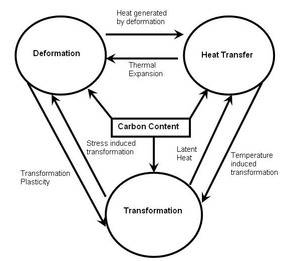
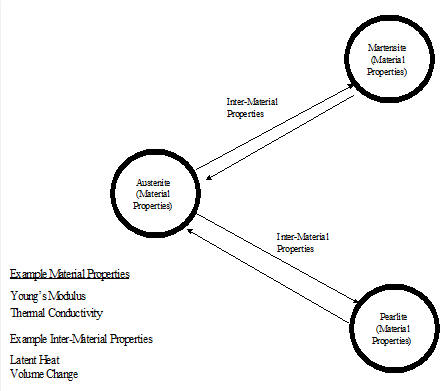
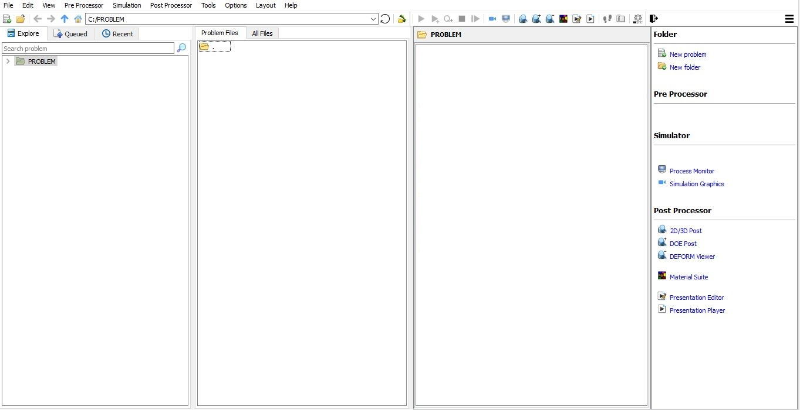
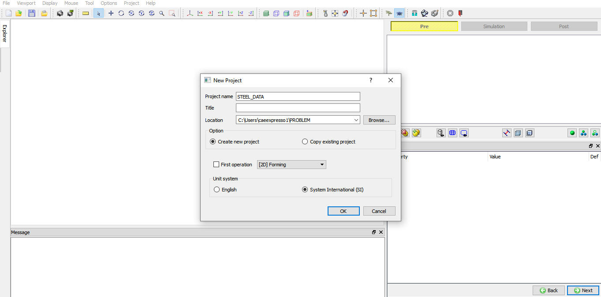
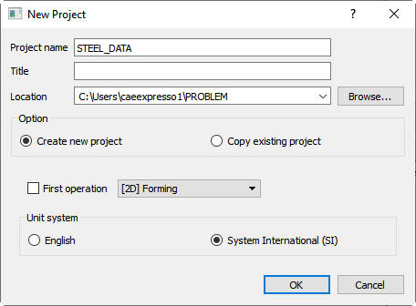
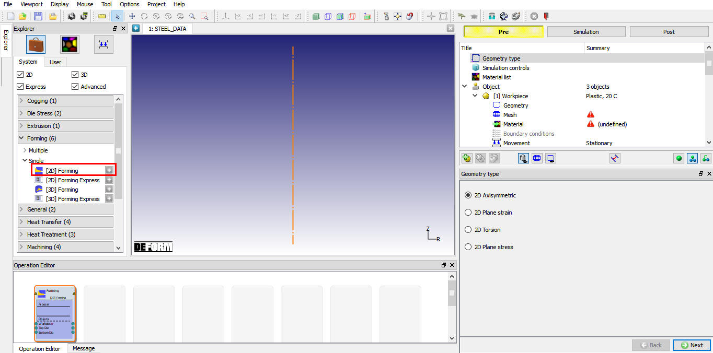
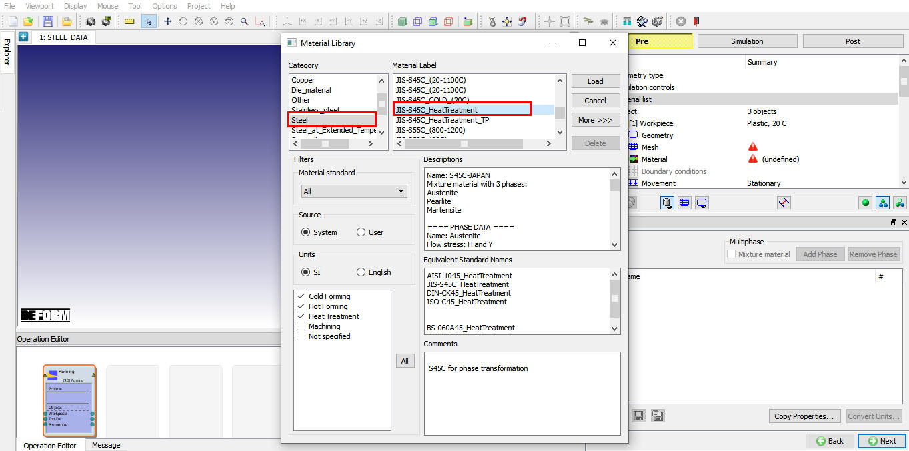
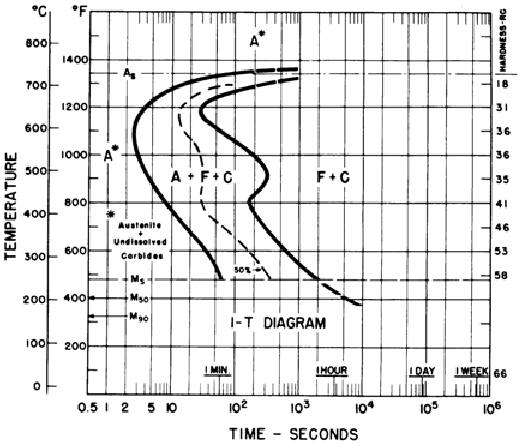
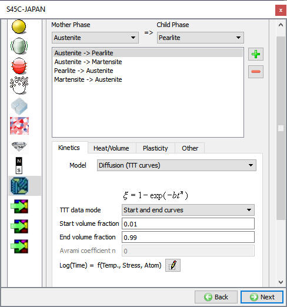
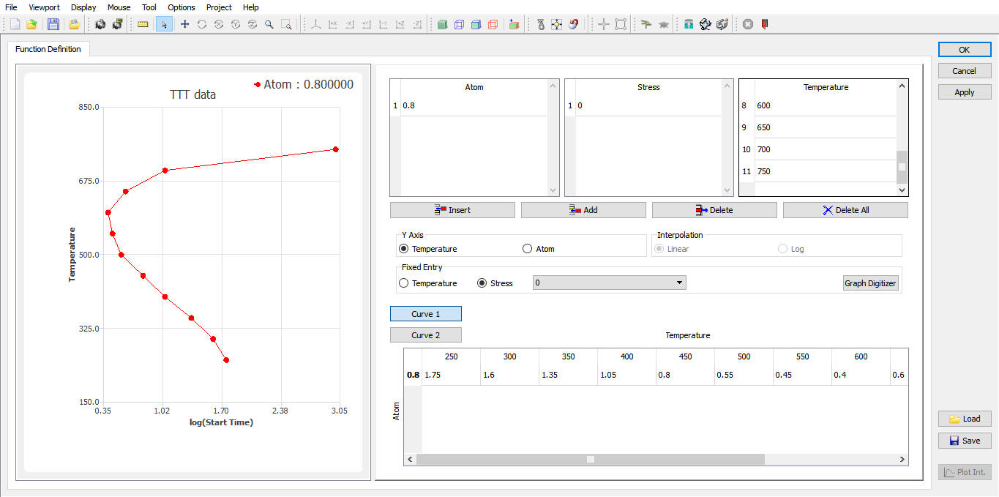

Preparing Material and Phase Transformation Data
5.4. Setting Material Properties
5.5. Setting Inter-Material Properties
The purpose of this lab is to acquaint the user with inputting material properties required to model phase transformations in DEFORM®. In this lab, the user will modify a material from the system Material Library to create new set of data for another steel.
The key concepts for the user to look for are:
What material properties are required to define a phase?
What data is required to describe the transformation between the phases?
How can one prepare inputs for a DEFORM® heat treatment simulation based on metallurgical reference or experimental data?
The deformation, heat transfer, phase transformation and diffusion are coupled with each other in DEFORM simulations. Fig. 2DHTML5.1. shows a basic description of their relations. For example, for carbon steel, the material properties are functions of the carbon content. As the concentration of carbon may be changed by diffusion, the mechanical and thermal properties of the steel will change with it.
In DEFORM, a material can be defined as a "mixture" material, which consists of a set of component materials, each of which has its own elastic, plastic and thermal data. These component materials are referred as "phases". The material properties of this mixture will be determined by properties of the phases using a weighted-average mixture rule, based on volume fraction of each phase.
Fig. 2DHTML5.2. shows an example of the transformation relations of a plain-carbon steel. Three different phases are considered: Austenite, Martensite and Pearlite. Austenite exists at higher temperatures while Martensite (meta-stable) and Pearlite (stable) are phases at lower temperatures. The meta-stable phases can be produced by rapidly cooling Austenite. The properties of the transformation from one phase to another are defined with a kinetics model for determining transformation rate and other properties such as latent heat and volume change. The transformation data are also referred as the Inter-Material properties.
(Note that the definition of “phase” in DEFORM is slightly different from the scholarly definition of “phase” in some textbooks, where, for example, Pearlite is not considered as a “phase”, but a “micro-constituent” consisting of multiple “phases” in particular structure. Our definition of “phase” includes such “micro-constituent”.)
In general, the thermal and mechanical properties of a phase do not vary dramatically with minor changes in material compositions. Therefore these properties may be approximated with data from similar materials. For example, the properties for Austenite, Pearlite, and Martensite from the material JIS-S45C in the Material Library can be used for some generic low-carbon steels.
However, other properties, particularly the transformation kinetics, are very sensitive to material compositions, therefore they may not be approximated with materials of similar compositions. In this case, the users are expected to obtain the data from literature or experiments. For the transformation kinetics, useful reference books include
Atlas of Time-Temperature Diagrams for Irons and Steels by G. F. Vander Voort, ASM International, 1991.
Atlas of Time-Temperature Diagrams for Nonferrous Alloys by G. F. Vander Voort, ASM International, 1991.
ASM Handbook: Heat Treating, ASM International, 1991.
In addition, transformation kinetics can be determined by dilatometry experiments in metallurgical labs, which can also measure the latent heat and volume change during transformation.

Inter-relation between three modes in metal forming

Diagram on Inter-relation between different phases of steel
On a Windows machine, go to the  button select DEFORM-v1x.xxx (.xxx indicates version number E.g. v14.0.2)
and select DEFORM GUI Main vxx.xx from the menu. The DEFORM GUI Main window will appear, as shown in below Fig. 2DHTML5.3.)
button select DEFORM-v1x.xxx (.xxx indicates version number E.g. v14.0.2)
and select DEFORM GUI Main vxx.xx from the menu. The DEFORM GUI Main window will appear, as shown in below Fig. 2DHTML5.3.)

DEFORM GUI main window
Create a new problem either by selecting File  New Problem or by clicking the New Problem
New Problem or by clicking the New Problem  icon. The Problem Setup window will appear as shown in Fig. 2DHTML5.4. Select " Integrated Manufacturing Process"
radio button and units system as "SI" using radio button. Define Problem Name as "STEEL_DATA" and make sure the “Show option dialog” check box is turned on (if we do not turn on the “Show option dialog”
check box, then we will not get the New Project dialog in MO UI). Then click on
icon. The Problem Setup window will appear as shown in Fig. 2DHTML5.4. Select " Integrated Manufacturing Process"
radio button and units system as "SI" using radio button. Define Problem Name as "STEEL_DATA" and make sure the “Show option dialog” check box is turned on (if we do not turn on the “Show option dialog”
check box, then we will not get the New Project dialog in MO UI). Then click on  button to open a new Problem using the Deform Integrated Manufacturing Process.
button to open a new Problem using the Deform Integrated Manufacturing Process.
Problem type selection window
Multiple operation wizard will open with the New Project dialog, defined problem name is updated as ‘STEEL_DATA’ as the project name.(See Fig. 2DHTML5.5.).

Problem location selection window
User can also change the Unit system (File menu selected unit system will be selected by default), for this lab we will select the SI unit system and add operation by selecting from First operation pull down list and check box (see Fig. 2DHTML5.6.).
Using copy Existing project option we can import previous saved projects as new project. Click on  to continue to open the operation.
to continue to open the operation.

Assigning problem name
Multiple Operation wizard will open with new project called STEEL_DATA. Add 2D Forming operation from the Explorer Operations list. Add the operation by clicking on  button next to 2D Forming or user can also add by drag and drop into the Operation Editor. (See Fig. 2DHTML5.7.)
button next to 2D Forming or user can also add by drag and drop into the Operation Editor. (See Fig. 2DHTML5.7.)

MO Wizard with 2D Forming Operation
Open the Material dialog by click on the material list branch in operation tree and click the Load from lib  button. Select the category Steel and load material
“JIS-S45(Heat Treatment)”. This material is a mixture material with three components (phases): Austenite, Pearlite, and Martensite. Change name of the mixture material from "S45C-Japan" to “New Steel”.
button. Select the category Steel and load material
“JIS-S45(Heat Treatment)”. This material is a mixture material with three components (phases): Austenite, Pearlite, and Martensite. Change name of the mixture material from "S45C-Japan" to “New Steel”.

Material loading from library
Review and compare the Plastic properties of Pearlite and Martensite. Note that Martensite has higher flow stress than Pearlite at the same temperature. And the Austenite has the lowest flow stress. Same trend can be found in the Hardness values of the phases. Also review the subtle difference in Elastic, Thermal, and Diffusion properties of phases. Pay attention to their dependencies on the carbon contents as well.
In this lab, we will not change the material properties of these phases.
|
Question: What is flow stress?
Flow stress is the stress required for incremental plastic deformation on a material. If a material is being deformed plastically, the effective stress in the material is determined from the flow stress data based on the temperature, strain and strain rate at which the material is being deformed.
Question: How to get properties for a phase?
The properties of each individual phase can be determined experimentally by using special microprobes to test on each individual phase. Also, they may be available from the literature, or be estimated from their chemical composition using experience-based formula or computer models. The subtle differences in plastic, thermal and diffusion properties between phases are often less influential on the simulation results than phase transformation properties. Therefore, if properties for individual phases are not available, the same properties (expect Hardness) may be applied to all phases. In this case, provided the transformation data are good, the simulation can still capture some essential phenomena. |
In this section, we will redefine the Transformation properties for the New Steel. Assume that Fig. 2DHTML5.9. is the Isothermal Transformation (IT) diagram available from the literature or metallurgical lab for your steel. We will need to convert the information from this figure into DEFORM inputs.

Isothermal Transformation (IT) Diagram
Select the mixture material New Steel. Click the Transformation tab to bring up the Transformation Dialog.
In this dialog, select transformation Austenite -> Pearlite and activate tab Kinetics. Note the Pearlite here corresponds the F + C in the diagram.
Under tab Kinetics, keep the Model to Diffusion (TTT Curves), and keep the TTT Data Mode to Start and End Curves.
Keep the Start Volume Fraction and End Volume Fraction to 0.01 and 0.99, respectively.
Click the Data button next to Log(Time) = f(Temp., Stress, Atom) to bring up the dialog for start and end curves definitions.
Change the Temperature to 11 rows, and input the temperatures 250 - 750°C with intervals 50°C.
|
Question: What are Start and End volume fractions?
These are criteria for defining the start (left curve) and end (right curve) of transformation in the metallurgical tests. By most conventions, they are 0.01 and 0.99. But some diagrams use 0.001 and 0.999. Note these settings are important for calculation the rates of transformation |
.
Remove the Stress dependency by reducing the number of rows to one. Input zero into the only row. (Note the when there is only one row in Stress, the actual value of this row is not important. Here it is initialized to zero for cosmetic purpose.)
Set number of rows to one for Atom and set value to 0.8 in the only row.
From Fig. 2DHTML5.9., we extract data points for the Transformation Start curve (Curve 1) and Transformation End curve (Curve 2) as the following:
|
Temperature (°C) |
Start Log[Time(s)] |
End Log(s)] |
|
250 |
1.75 |
3.30 |
|
300 |
1.60 |
2.80 |
|
350 |
1.35 |
2.55 |
|
400 |
1.05 |
2.30 |
|
450 |
0.80 |
2.35 |
|
500 |
0.55 |
2.45 |
|
550 |
0.45 |
2.15 |
|
600 |
0.40 |
1.70 |
|
650 |
0.60 |
1.45 |
|
700 |
1.05 |
2.30 |
|
750 |
3.00 |
4.00 |
Input these data into the dialog, and click on , you should see curves as displayed in Fig. 2DHTML5.11. Click  after it is done.
after it is done.

Transformation properties dialog

Transformation start and End curve dialog